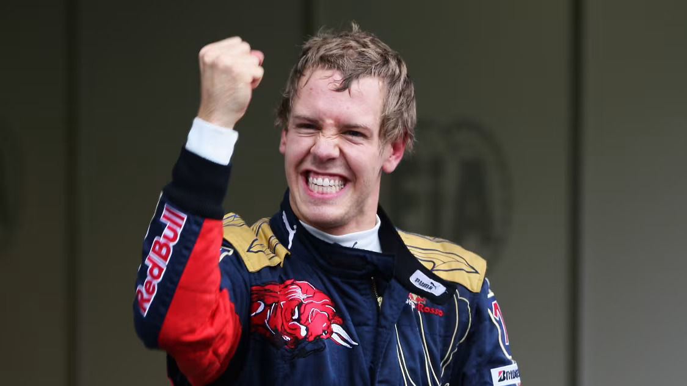
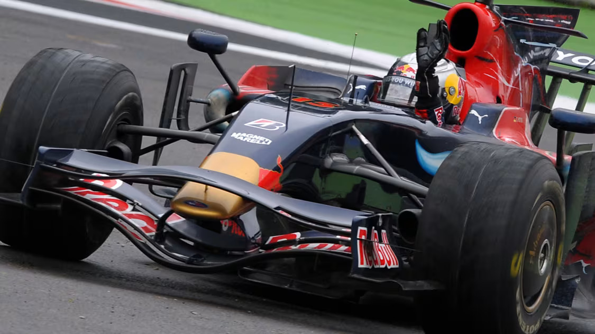
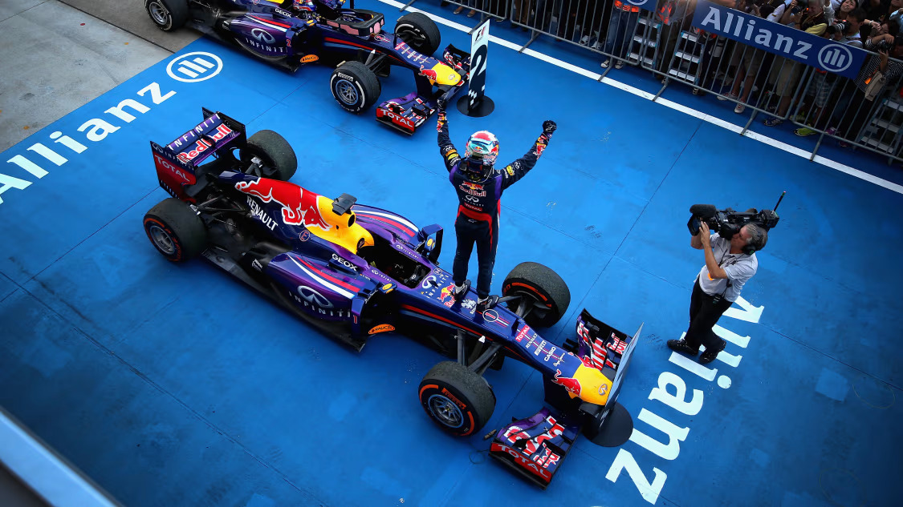
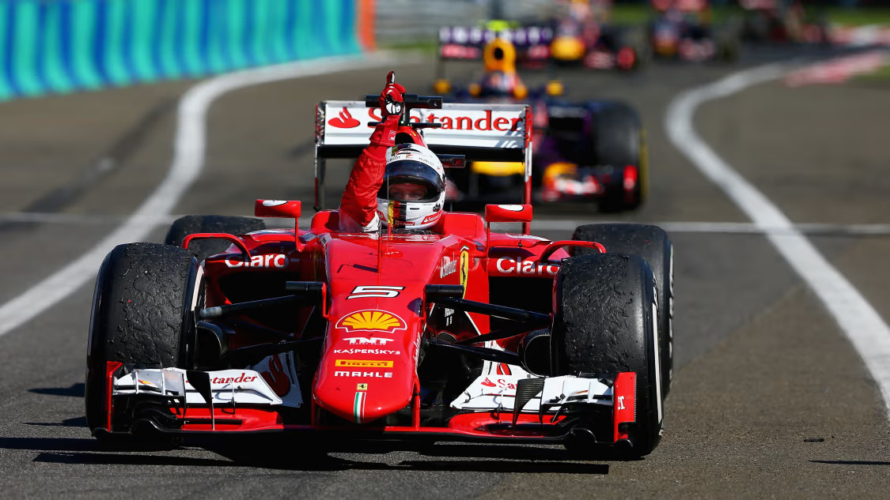
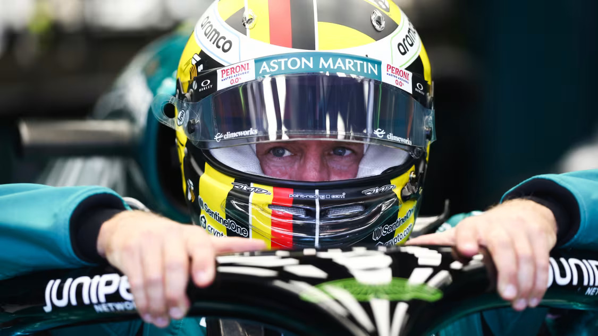

Sebastian Vettel - 2010-2013
The youngest ever world champion's accumulation of age-related records that began in 2010 continued for four consecutive seasons, culminating in a one-sided 2013 title triumph that confirmed his status as one of the sport’s all-time greats. Sebastian Vettel’s first championship, at the age of 23, provided a surprise ending to an intensely competitive 2010 campaign. There was surely more to come from this fast rising racer, and it came quickly when he completely dominated in 2011 to become the youngest double world champion. In 2012, with a series of comebacks from setbacks against the strongest opposition in the longest ever season, his third driving title in a row was hard-earned and well-deserved. In 2013, and still just 26 years old, he made short work of becoming the youngest ever quadruple world champion. In truth the precocious youngster who came so far so fast was in a hurry from the time he was a toddler...
Sebastian Vettel is a German former Formula 1 racing driver who is widely regarded as one of the sport's most successful and influential figures. Born on July 3, 1987, in Heppenheim, Germany, Vettel began karting at a young age and quickly displayed a natural talent for racing. His journey to Formula 1 was marked by impressive performances in the junior categories, where he won numerous titles, including the 2004 Formula BMW ADAC championship. His rapid rise through the ranks caught the attention of the motorsport world, leading to his Formula 1 debut with BMW Sauber in 2007 as a test driver, where he replaced the injured Robert Kubica at the United States Grand Prix and finished a remarkable eighth, scoring his first points.
Vettel's breakthrough in Formula 1 came when he joined Scuderia Toro Rosso, a sister team of Red Bull Racing, in 2008. In just his first full season with the team, Vettel made history by winning the 2008 Italian Grand Prix at Monza. At 21 years old, he became the youngest driver ever to win a Formula 1 race, a record that underscored his potential. His victory in a car that was not considered competitive signaled the arrival of a future star and cemented his reputation as a driver with exceptional skill and determination.
In 2009, Vettel was promoted to Red Bull Racing, where he would achieve the most significant successes of his career. Under the guidance of team principal Christian Horner and the technical expertise of Adrian Newey, Vettel thrived in a car that was consistently at the front of the grid. He won his first World Drivers' Championship in 2010, becoming the youngest world champion in Formula 1 history at the age of 23. This triumph marked the beginning of a dominant era for Vettel and Red Bull Racing, as he went on to win four consecutive world titles from 2010 to 2013.
Vettel's driving style was characterized by his aggressive yet calculated approach, particularly in qualifying sessions where he often secured pole positions, setting the stage for his race-day victories. His ability to manage races from the front, combined with his exceptional pace, made him a formidable competitor. The 2011 season was particularly dominant, as Vettel won 11 of the 19 races and clinched the championship with four races remaining. His success during this period established him as one of the sport's all-time greats, drawing comparisons to legends like Michael Schumacher and Ayrton Senna.
After his successful stint with Red Bull Racing, Vettel sought a new challenge and joined Scuderia Ferrari in 2015. His move to the iconic Italian team was seen as an attempt to emulate his idol Michael Schumacher, who had led Ferrari to five consecutive world championships in the early 2000s. Vettel quickly adapted to his new environment, winning three races in his first season with Ferrari and finishing third in the championship. Although he came close to winning the title in 2017 and 2018, intense battles with Mercedes' Lewis Hamilton ultimately saw Vettel finish as runner-up in both seasons.
Vettel's time at Ferrari was marked by highs and lows, with moments of brilliance overshadowed by occasional mistakes and strategic misjudgments. Despite these challenges, he remained a beloved figure within the team and among fans, admired for his passion, work ethic, and sportsmanship. His commitment to the sport and his team never wavered, even as the team struggled to match the dominance of Mercedes in the latter half of the 2010s.
In 2021, Vettel made a new move, joining the newly rebranded Aston Martin team, formerly Racing Point. Although the team was in a rebuilding phase, Vettel's experience and leadership were seen as valuable assets in their quest to move up the grid. While the results were mixed, Vettel continued to demonstrate his talent, securing a podium finish at the Azerbaijan Grand Prix and consistently extracting the maximum from his car. His tenure at Aston Martin further solidified his reputation as a driver who could inspire and lead a team, even in challenging circumstances.
Off the track, Sebastian Vettel is known for his intelligence, wit, and strong sense of social responsibility. He has been an outspoken advocate for environmental sustainability, diversity, and mental health in recent years, using his platform to raise awareness and inspire positive change. In November 2022, Vettel announced his retirement from Formula 1, ending a storied career that left an indelible mark on the sport. His legacy is defined not only by his four world championships and 53 race wins but also by the respect and admiration he earned from his peers and fans alike.